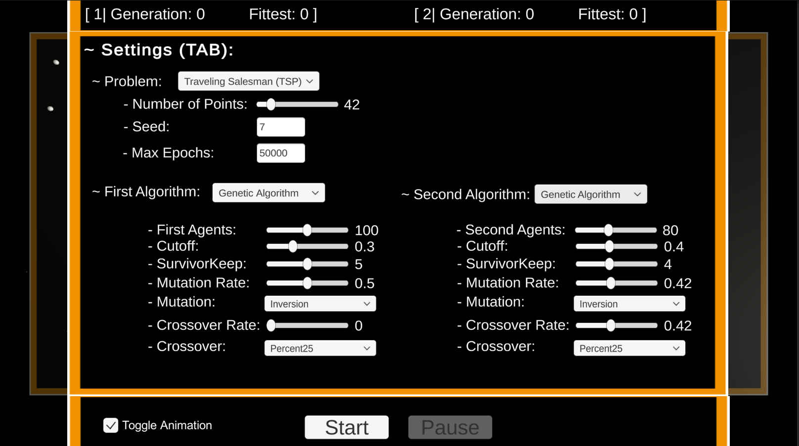
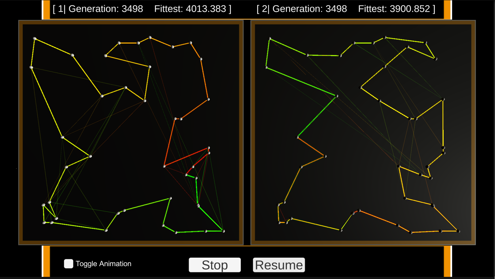

Projects
Intelligent Systems Master's Final Project.
Intelligent Systems Masters Final Project.
The idea: to provide an application which helps to better understand certain algorithms by simultaneously visualising two or more algorithms at the same time as they progress through the problems search space,
and also providing an UI to manipulate parameters while the algorithms are running.
An object oriented approach was carried out to be able to quickly add new problems and algorithms
to the system as there is a vast number of nature inspired algorithms and optimisation problems (which is constantly increasing).
Optimisation Problems implemented:
- Travelling Salesman Problem (TSP)
Algorithms implemented:
- Genetic Algorithm (GA)
To be continued...
GitHub

